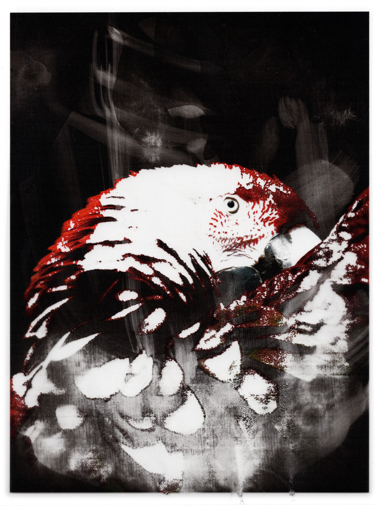
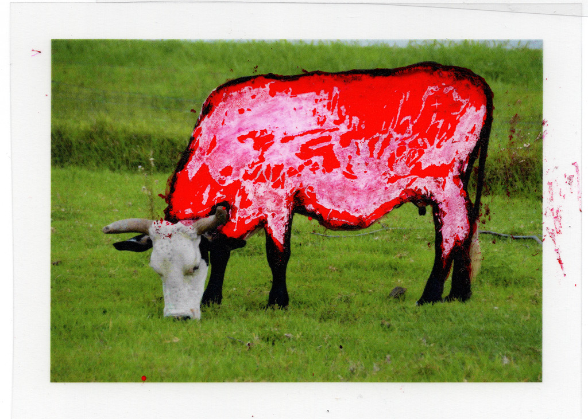
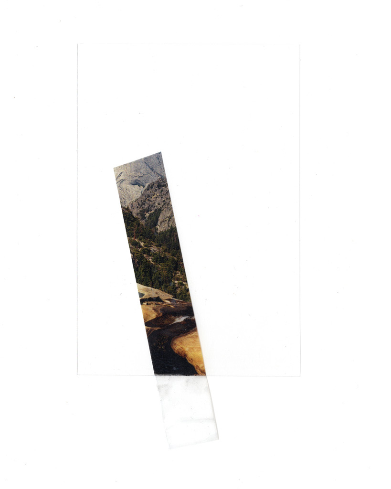
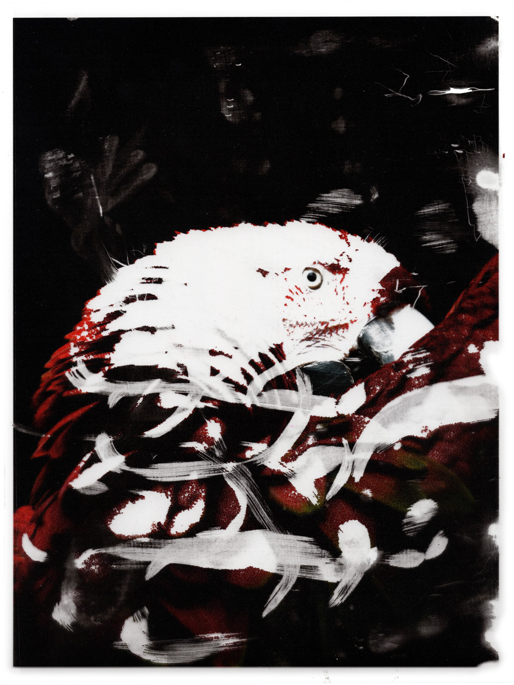

Acetate Melt
Experimentation with rubbing alcohol & acetate prints / 2021
While working on a school project, I began drawing on an acetate print I had. The ink I used was alcohol based which led to part of the print corroding off of the clear acetate film.
While I used this effect in the initial school project, I also began experimenting with more prints and different methods of applying different alcohol based liquids.
This is a somewhat ongoing project. I might make more in the future.




